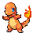

PokeWiki

Charmander, el Pokémon Lagartija de tipo Fuego, destaca por la llama en la punta de su cola, que refleja su estado vital y emocional. Esta llama arde más brillante cuando está feliz o enérgico, pero se debilita si está enfermo o herido. Prefiere hábitats cálidos como montañas o cuevas y tiene una personalidad amable y curiosa, además de ser extremadamente leal a su entrenador. Aunque pequeño, demuestra un gran potencial en combate, usando su fuego para protegerse y causar daño.
La llama de Charmander no solo simboliza su fuerza, sino también su vulnerabilidad, ya que, si se apaga, podría peligrar su vida. Es conocido por resistir desafíos con valentía, aunque es especialmente sensible a la lluvia. Esta dualidad entre resistencia y fragilidad hace que Charmander sea una figura única y entrañable en el universo Pokémon, además de ser muy valorado por su evolución hacia el poderoso Charizard.

Rugido:
Charmander, al ser un Pokémon de primera evolución, se caracteriza por ser rápido y versátil en combate. Su principal estrategia radica en aprovechar sus movimientos de tipo Fuego, como Ascuas o Lanzallamas, para infligir daño constante y efectivo, especialmente contra tipos Planta, Bicho, y Acero. Gracias a su velocidad decente, suele atacar antes que muchos oponentes, permitiéndole presionar desde el inicio del combate. Aunque su resistencia es limitada, su capacidad de infligir quemaduras puede reducir el daño físico recibido, debilitando a rivales más fuertes.
Como un Pokémon en etapa inicial, Charmander suele usarse para desgastar al oponente antes de que entren Pokémon más fuertes en batalla. En dobles, puede actuar como un soporte ofensivo, debilitando defensas o causando estados alterados. Su potencial estratégico crece conforme gana experiencia y desbloquea movimientos más avanzados, preparando el terreno para sus evoluciones. Es ideal para entrenadores que busquen desarrollar tácticas rápidas y ofensivas mientras equilibran su equipo.
En este video podemos ver un fragmento de un momento del anime de pokemon, charmander se encuentra bajo la lluvia esperando a un entrenador que le abandonó, como dice la pokedex si su llama se apagaba hubiese muerto.
| Tipo | Fuego | Volador | Hielo | Psíquico | Agua | Eléctrico | Lucha | Planta | Veneno | Roca | Bicho | Hada | Dragon | Fantasma | Siniestro | Normal | Acero | Tierra |
|---|---|---|---|---|---|---|---|---|---|---|---|---|---|---|---|---|---|---|
| Efectividad | x0.5 | x1 | x0.5 | x1 | x2 | x1 | x0.5 | x1 | x2 | x0.5 | x1 | x0.5 | x2 | |||||
| Nivel | Movimiento | Tipo | Potencia |
|---|---|---|---|
| 1 | Placaje | Normal | 40 |
| Gruñido | — | ||
| 3 | Ascuas | Fuego | 40 |
| 6 | Rueda Fuego | 60 | |
| 9 | Pantalla de humo | Normal | - |
| 12 | Dragoaliento | Dragon | 60 |
| Lanzallamas | Fuego | 90 | |
| 48 | Infierno | 110 |